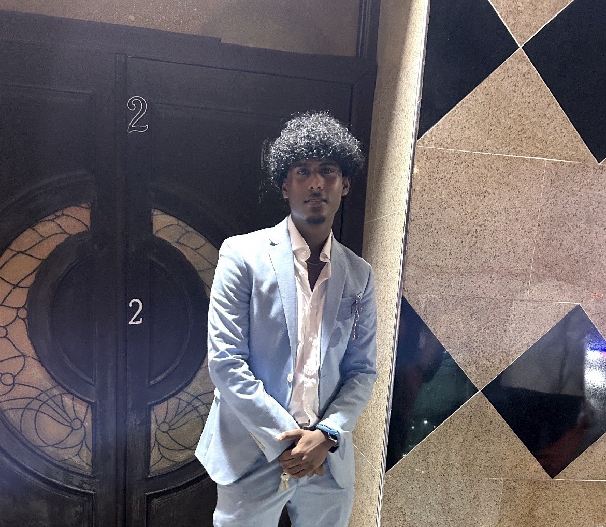

I, Akash Ramkaran, am a passionate web developer and designer with a keen interest in creating engaging digital experiences. My goal is to continuously learn and improve my skills while contributing to the tech community. I just feel that I have a lot to offer in this life and I am excited to share my journey. I am currently pursuing a degree in Computer Science at Queens College, where I am honing my skills in programming, web development, and software engineering.
I believe that life is a journey of continuous learning, growth, and exploration. I find purpose in curiosity—whether it’s understanding how a car works or how to build something new—and I strive to approach every experience with an open mind and a spirit of discovery. I value the joy that comes from being active, from playing sports like basketball to embracing the thrill of road trips and adventures in the great outdoors. At the same time, I recognize that life is too short to get caught up in unnecessary conflicts or negativity. I surround myself with good people who bring positive energy, kindness, and laughter. I understand that we are all here for a limited time, and because of that, I choose to focus on what truly matters: meaningful connections, memorable experiences, and the simple joys of life. Rather than worrying about material things, I prioritize the things that bring genuine happiness and fulfillment—like the beauty of the outdoors, the excitement of new adventures, and the friendships that make every moment worthwhile.
The reason I chose computer science is because I love making a difference in the world, and I feel that this degree can open many different paths that can help someone in need. For example, I used to work at a non-profit organization that helped children with eyesight problems worldwide. Although I was on the finance team, I was invited to a gala by the company where I had the opportunity to listen to an employee in the computer science field describe how they worked to create software that helped diagnose and treat children more effectively. I was amazed by the impact one can make!
If you're interested to see some of my projects and experiences so far, check out these links below: